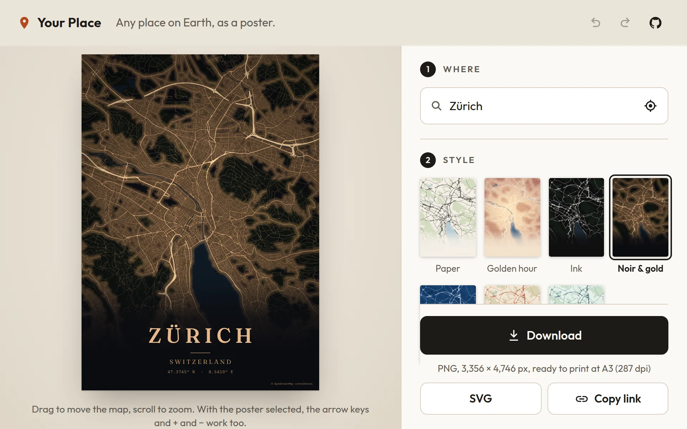

Performance · Your Place
From 41.7 seconds to 0.39: making a map poster fast
The map engine behind Your Place worked on the first try and was unusably slow. Two fixes, both found by measuring, took the first poster from 41.7 seconds to 0.39. A Web Worker then made what was left invisible.

The problem
Your Place turns any place into a print-ready map poster. There are no map images involved: the app fetches OpenMapTiles vector tiles, decodes each one into flat typed arrays of streets, water, parks and buildings, and paints them itself, on a canvas for the preview and the PNG, and as SVG for the vector download.
The first version that drew a correct poster of Zürich took 41.7 seconds to do it, measured in headless Chromium with software rendering. That's the slowest setup the app runs in, and it's also where the end-to-end tests run, so it was the number to fix. A poster you can't see for 40 seconds isn't a product.
The work splits into stages: choose the tiles, fetch them, decode them, trace every shape into a path, then fill and stroke. Timing those stages separately pointed at two of them.
Fix one: ask for a third of the tiles
The view was asking for 88 tiles where 30 show the same streets. Tiles from a deeper zoom level carry detail far too fine to see at poster scale, and every one of them has to be downloaded, decoded and traced.
The fix was a rule rather than a tweak: at most five tiles across the map, so a tall poster needs about 50 at most. Below that a city loses its side streets. Above it, a whole region turns into a grey blur of lanes and takes ages to load. The tile zoom depends only on the view, never on the size of the output:
// src/map/geo.ts
const TILES_ACROSS = 5;
export function tileZoomFor(frame: Frame): number {
const z = Math.floor(frame.zoom + Math.log2((TILES_ACROSS * TILE_SIZE) / frame.rect.w));
return clamp(z, 0, MAX_TILE_ZOOM);
}The size independence turned out to matter as much as the speed. The 500-pixel preview, the 84-pixel style thumbnails and the 7,000-pixel print all draw exactly the same streets, so what you see in the preview is what gets printed.
Fix two: a call that slows down as the path grows
The bigger cost was in tracing. Each kind of shape (all the buildings, say) is traced into one Path2D
and filled once, which is the fast way to draw thousands of shapes. Each building is a ring, and each ring ended
with closePath().
In Chromium, Path2D.closePath() takes time in proportion to the path built so far. With 100 shapes
you'd never notice. A city has about 90,000 building outlines, so the total cost grows with the square of
the count. Tracing them took 85 seconds with the call and 77 milliseconds
without it.
Canvas doesn't need the call: a fill closes every open ring by itself. SVG output does want it, and there a
Z in a string costs nothing. The code that walks the geometry draws through a small "pen"
interface, so the fix is one flag:
// src/map/draw.ts: every ring or line of one kind, in output pixels
for (let r = 0; r + 1 < starts.length; r++) {
const a = starts[r]!;
const b = starts[r + 1]!;
if (minSize > 0 && extentOf(coords, a, b) * k < minSize) continue;
pen.moveTo(ox + coords[a * 2]! * k, oy + coords[a * 2 + 1]! * k);
for (let i = a + 1; i < b; i++)
pen.lineTo(ox + coords[i * 2]! * k, oy + coords[i * 2 + 1]! * k);
// SVG: yes. Canvas: no, a fill closes its rings by itself
if (close) pen.closePath();
count++;
}
The minSize check in the same loop is the other quiet saving: a garden shed less than a pixel across
on a city-wide poster isn't drawn at all.
- 41.7 sfirst poster, before
- 0.39 sfirst poster, after
- 88 → 30tiles for the same streets
- 85 s → 77 mstracing 90,000 buildings
Then make the waiting invisible
A fast paint is still a paint. Dragging a map produces a new view on every pointer move, and if each one blocks the
main thread, typing a title stutters too. So painting happens off the main thread, in a Web Worker drawing on an
OffscreenCanvas, and three rules keep it responsive.
Newer requests cancel older ones. Each request names a channel: the poster, a download, the thumbnails. A newer request on the same channel makes the older one pointless, and the engine checks between stages whether its job is still wanted:
// src/map/worker.ts
scope.onmessage = (event) => {
const msg = event.data;
if (msg.type === 'paint') {
latest.set(msg.channel, msg.id);
const stillWanted = () => latest.get(msg.channel) === msg.id;
engine.paint(msg.job, msg.priority, stillWanted).then(/* reply, transferring the bitmap */);
}
};Paints take turns by priority. The poster you're looking at goes first, then a download, then the thumbnails.
The last picture follows your finger. Only one paint is in flight at a time, always for the newest view. Until it arrives, the previous picture is moved and scaled to where it belongs. That's one scale and one offset, worked out in Web Mercator. The map tracks the pointer at full frame rate while the title and the frame stay where they are:
// src/poster/compose.ts
// where a picture painted for one view lands when drawn for another
const k = 2 ** (after.zoom - before.zoom);
return {
x: (before.left - before.rect.x) * k + after.rect.x - after.left,
y: (before.top - before.rect.y) * k + after.rect.y - after.top,
w: shown.job.width * k,
h: shown.job.height * k,
};Browsers that can't draw in a worker get the same engine on the main thread, and its code is only downloaded for them.
What I took from it
- Measure in the slowest place you support, with real data. Both problems only showed at the size of a real city. With a few hundred test shapes, the quadratic call was invisible.
- The biggest wins were doing less. A third of the tiles and one call skipped. There was no clever inner loop. The useful part was finding which work didn't need doing.
- Speed decisions can be product decisions. Making the tile choice independent of output size fixed the speed and also gave a guarantee: the print matches the preview line for line.
- Responsiveness is a separate problem from speed. Even at 0.39 seconds, a blocked main thread would make dragging feel broken. The worker and the re-projected picture fixed how it feels; the two fixes above fixed how long it takes.